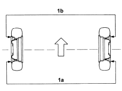
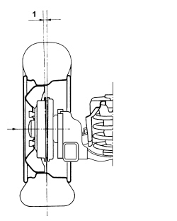

4450A40 REAR WHEEL GEOMETRY - CHECK USING OPTICAL EQUIPMENT, INCLUDES ADJUSTMENT IF NECESSARY
- Path
- Procedures > 44 SUSPENSION AND WHEELS > 4450 HUBS AND WHEELS > 4450A WHEEL GEOMETRY > 4450A40 REAR WHEEL GEOMETRY - CHECK USING OPTICAL EQUIPMENT, INCLUDES ADJUSTMENT IF NECESSARY
- Kind
- repair procedure (removal / refitting; the operation number is the code)
- Applies to
- all engines; all production periods
- Interactive page
- https://sloeber94.github.io/elrnDB-fPnd/en/#/2752822
Applies to: all engines; all production periods
The check on the rear wheel geometry should be carried out after carrying out the following checks on the parts that affect the wheel geometry:
tyre inflation pressure;
Subject | Value | |
|---|---|---|
- | Front wheel pressure (bar) | 2 |
Subject | Value | |
|---|---|---|
- | Rear wheel pressure (bar) | 1.9 |
the eccentricity and orthogonality of the wheel rims should not be more than 3mm;
wheel bearing endfloat.
Position the vehicle on a test bench, with sliding plates on all the wheels.
Place the vehicle in standard "A" conditions (with spare wheel, tool kit, all supplies and a full fuel tank).
TOE IN CHECK
Carry out the preliminary checks on the vehicle and remove any loads transported.
Position the vehicle (in running order) on the lift equipped with optical test equipment.
1. Check that the toe in (1a-1b) is within the recommended limits.
Measurement | Trim level | Value | |
|---|---|---|---|
- | Rear wheel toe in (mm) Standard A (-) | 4x2 | +3 ± 3 |
4x4 | +3 ± 2 |

Applies to: all engines; all production periods
CAMBER CHECK
Carry out the preliminary checks on the vehicle and remove any loads transported.
Position the vehicle (in running order) on the lift equipped with optical test equipment.
1. Check that the rear wheel camber is within required limits.
Measurement | Trim level | Value | |
|---|---|---|---|
- | Rear wheel camber (degrees) Standard A (-) | 4x2 | -45' ± 30' |
4x4 | -30' ± 20' |
